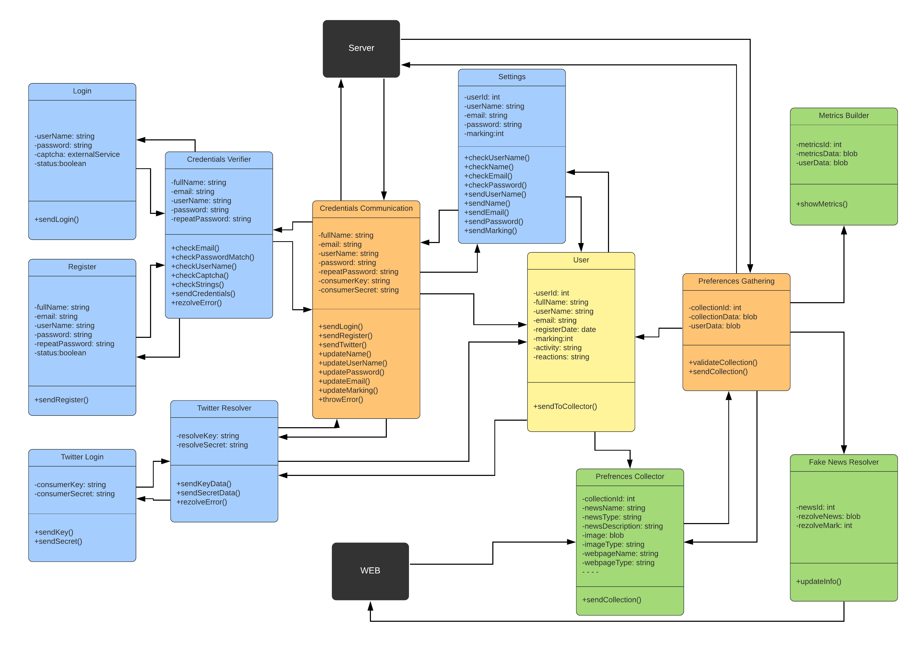
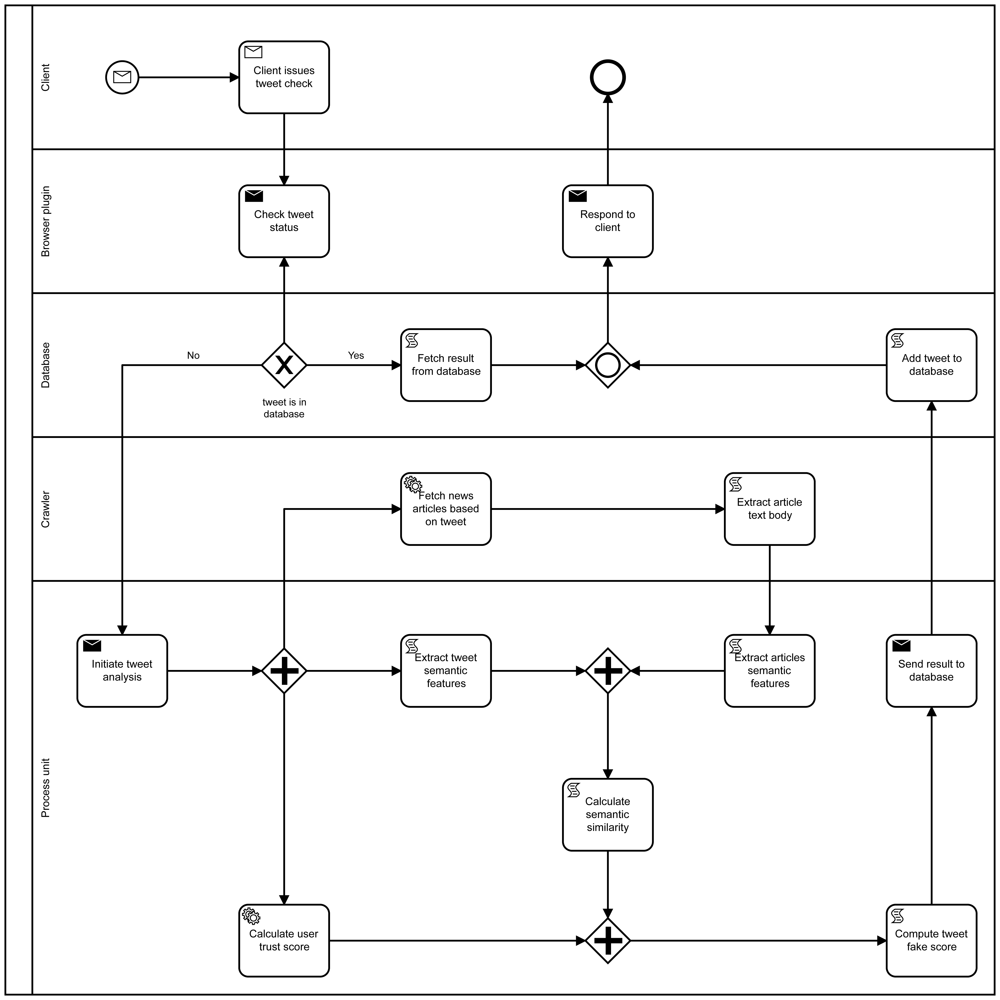
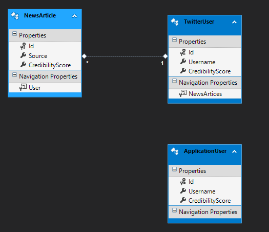
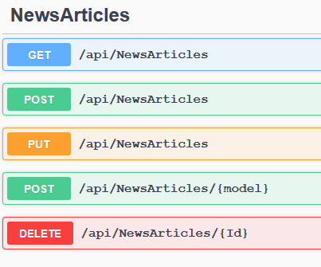

Community Draft
Fake News Detection
- Authors
-
Victor Vlad
&
Munteanu Andrei-Ștefan
&
Pantelemon Victor-Stefan
Intoduction
The project aims to detect fake news from the Twitter platform using modern technologies
such as machine learning and SPARQL to verify the credibility of the content of a news story.
The project is divided into several modules that will be described below.
Architecture of the Web Application
On the front-end we have the following modules that are
linked together to create a service-oriented architecture that can be scaled in the future.

The architecture on the back-end combines several different technologies, these being separated
into several modules namely: cahing, processing, article scraper

Modules
Cahing
The backend cache module is responsible for the delivery of the cached/processed data to the frontend.
The browser extensions is sending various requests to the cache module performing CRUD operations on the entities,
mainly read requests on the news article entity. The news article instances are uniquely identified by their uri.
For each article that cannot be found in the cache the caching module is calling the
processing module storing the result in the cache.
Processing
The purpose of the processing module is to associate a credibility score to a news story.
The score is determined by the result of several components, namely: the machine learning component,
the semantic component, the feedback from the extension users and the degree of credibility of the source of the article.
Article Scraper
Based on the keywords extracted from the article title, this module is using
Google to detect similar articles and extract the news content.
Input/output Data Formats
Entity Framework Model
The database was generated through entity framework using model first technique.
Entities were then generated from the database using entity framework core.
The CRUD operations are applied to them from API through the service layer.

Swagger schema
Representation of the model used by the API. For more details here.
ApplicationUserViewModel{
id integer($int32)
nullable: true
username* string
nullable: true
credibilityScore integer($int32)
nullable: true
}
NewsArticleViewModel{
id integer($int32)
nullable: true
source* string
nullable: true
credibilityScore* integer($int32)
nullable: true
userId* integer($int32)
}
Non-Functional Requirements
- Cache centralized system for all the users
- Nothing on security side for the final product due it's created only for academic purposes
- The application will run for chrome and firefox
- Level of trust per user, calculated with a Bayes/ML/Statistical methods over semantic or non semantic data
- Take advantage of posts metadata
- "Layers of trust" in order to say as fast as possible if a post is fake or not
- Parser with BS4 in order to get information from trusted websites
- Implement a crawler maybe with search engines in order to find credible sources
Final users
This browser extension can be used by any user regardless of age,
emphasizing a minimalist design and easy to use. In order to be easy to download,
the extension will be added to the market used by Google. A material design was chosen to streamline the user interaction.
Also the colors used for the badges on twitter express the visibility of fake news.
Use Cases:
- User will be able to install the plugin from a store
- User will be able to disable/enable the application.
- User will be able to set the maximum/minimum level of marking a news as fake
- User will be able to see results from a news
- User will be able to see what resources we found
- User will be able to open those resources
OpenAPI
The api documentation was generated using swagger preview version which we adapted to the .NET Core 3.0 version. Also
the documentation is available here.

External data sources
- Dbpedia.org
- Twitter API
- Various google search results using scrapper
References
- https://github.com/Cisco-Talos/fnc-1
- https://github.com/hanselowski/athene_system
- https://www.kdd.org/exploration_files/19-1-Article2.pdf
- http://ceur-ws.org/Vol-2350/paper10.pdf
- https://arxiv.org/pdf/1901.06437.pdf
- https://www.newsguardtech.com/wp-content/uploads/2019/10/The-Australian.-NewsGuard-shines-a-red-light-on-fake-news-sources-Oct-3-2019.pdf
- https://www.cyberghostvpn.com/privacyhub/fake-news/
- http://ceur-ws.org/Vol-2161/paper5.pdf
- https://arxiv.org/ftp/arxiv/papers/1904/1904.03989.pdf
- https://www.semanticscholar.org/paper/Explainable-Machine-Learning-for-Fake-News-Reis-Correia/b5b96a5295f1f1110d91b7a06e6e4bc8c079ff55
- https://medium.com/newco/how-to-detect-fake-news-in-real-time-9fdae0197bfd
- https://www.w3.org/2001/sw/news
- https://www.factcheck.org/
- https://www.politifact.com/
- https://www.snopes.com/
- http://verificationhandbook.com/downloads/verification.handbook.pdf
- http://fotoforensics.com/
- https://images.google.com/
- https://www.google.com/streetview/
- http://exif.regex.info/exif.cgi
- https://www.tineye.com/
- http://wikimapia.org/#lang=ro&lat=51.514200&lon=-0.093100&z=12&m=w
- https://www.mindtools.com/pages/article/fake-news.htm
- https://en.wikipedia.org/wiki/Fake_news
- http://theconversation.com/the-language-gives-it-away-how-an-algorithm-can-help-us-detect-fake-news-120199
- https://towardsdatascience.com/fake-news-classification-via-anomaly-detection-765c4c71d539
- https://www.newsguardtech.com/
- https://www.bbc.com/news/topics/cjxv13v27dyt/fake-news
- https://fandango-project.eu/the-project/ambition/
- https://www.ncbi.nlm.nih.gov/pmc/articles/PMC6762082/
- https://www.econstor.eu/handle/10419/190384
- https://www.econstor.eu/handle/10419/190384
- https://www.researchgate.net/publication/333627738_Semantic_Fake_News_Detection_A_Machine_Learning_Perspective
- https://link.springer.com/chapter/10.1007/978-3-642-12630-7_16
- https://www.researchgate.net/publication/221435652_Personalized_Semantic_News_Combining_Semantics_and_Television
- https://www.bbc.co.uk/academy/en/articles/art20130724121658626
- https://www.bbc.co.uk/blogs/bbcinternet/2010/02/case_study_use_of_semantic_web.html
- https://libguides.lmu.edu/c.php?g=595781&p=4121899
- https://www.theverge.com/2018/8/23/17383912/fake-news-browser-plug-ins-ai-information-apocalypse
- https://rawinfopages.co.uk/add-a-fake-news-detector-to-your-browser-to-alert-you-to-problems/